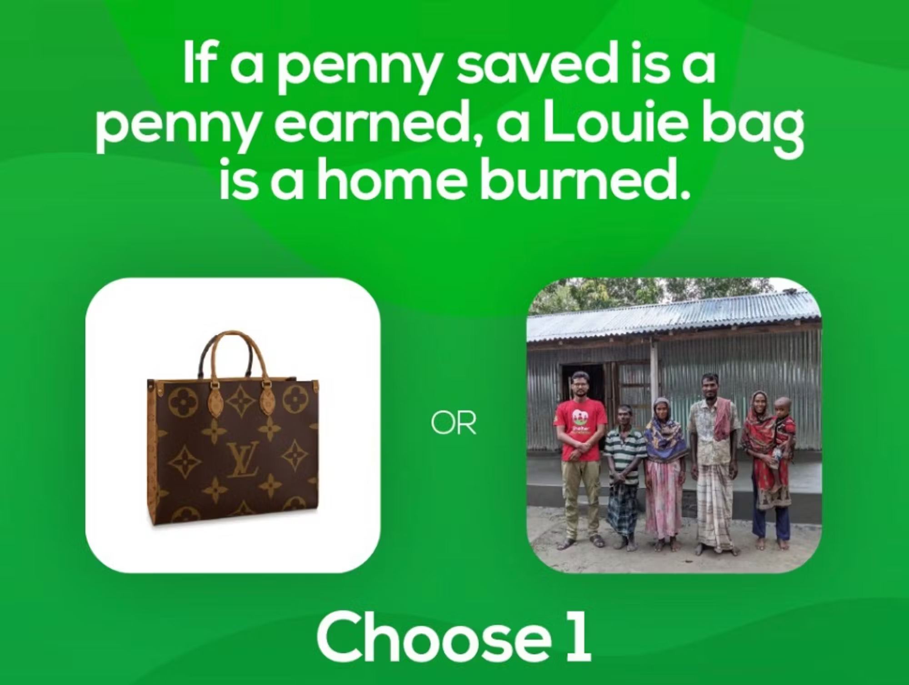

How We Can Correct Mankind’s Leaderboard
Overview of The Problem:
The fact that our designer goods do not represent wealth for positive utility is having more negative damage to society than we can fathom. This article is going to help detail why, and detail our solution in progress. As individuals, once we cover our basic needs, status becomes an intrinsic motivator in the rest of our actions. Status comes in many forms. The healthiest / most enlightened cultures put the highest status in rewarding positive sum behavior. In global culture, luxury goods like a Gucci bag/belt have become widespread as top status symbols, reflecting vapid use of money as the highest form of status. It has become such common Christmas list item for broke young teenagers that the richest man on the planet at the time of this writing got his riches from selling these overpriced goods representing nothing more than the ability to waste money. Collectively this misrepresentation of true status (service to others) is attributing more damage to building a healthy positive culture than we can imagine. Social media, our emergent global cultural production system, could be used collectively to unify humanity around bettering ourselves and others. Instead it is used to further extract youth through a false form of status as a service. Imagine a world where this wasteful spending was considered cancelable. One where we collectively take accountability for the capability to money to the positive growth of us as a species. Imagine a world where the designer things we wore showed off spending a lot of money to make a lot of positive impact. If the world you imagined only went as far as to redistribute the wealth of designer wear, try imagining the deeper cultural effects this new alignment would have.
“Over the past hundred years we have increase the global GDP sevenfold, yet wealth inequality continues to skyrocket and luxury spending grows rapidly. In order to change the failure of redistribution of wealth at scale, we must effectively influence culture and help redefine what “status” is in the modern age. This will ultimately change the flow of money in society as the new age of status being helping the world, becomes more prominent. We have failed at building a society which healthily distributes wealth/power. Given society is a collective project we are responsible for, we think this stems from the culture not supporting doing good as the highest form of status. We have more than enough resources, but many people without access to them, and a culture that motivates and glorifies overspending on vanity luxury goods.” - Jack Jay
A Deeper Dive:
On a fundamental level once someone gets the basics covered as in food, water, shelter. They can start to spend their time and money on convenience, health, and purpose but more often than not; status is where a majority of surplus wealth goes.
Societally we lack an alignment of our status symbols with creating a better world and with bettering ourselves. This idea to change what we cultural see as status has been referred to as “Status Engineering”.
What we wear is the most direct way we have to represent ourselves and our ideals/values. What your role model wears, or any person of influence is shaping the idea of status in that child, teenager, or adults mind.
Status is what we are buying when we pay $1, $10, or even $500 extra for a certain brand of T-Shirt irrespective of comfort.
The problem is not that buying status is a failure mode of an individual. Status is a form of positive competitive drive in society and a tool for respect attribution. That’s why you see Dior shoes in economy. This is not a miscalculation, currently the status from spending $1100 on shoes does have more long term value than things like first class because we are playing the game of unenlightened capitalism.
The problem is that we support the status symbol which costs $1100 and does no good for humanity. Thus this expenditure is not a failure of the buyer who bought status, it is only misguided that we do not have designer shoes that cost $1100, which builds a literal house in Bangladesh (a small home can be built as a permanent structure for someone for this amount). We need higher forms of status to exist in order to progress our culture which will aid in the distribution of wealth and power on a systemic level.
Once higher status objects are unveiled will these purely financial status seems become recognized for their tackiness and buying status will coincide with doing good. With no better alternative currently, we idolize symbols of wealth. Thus, on our highest display of who we are, the clothing we wear, we display 0 creativity or care for the world in spending and instead promote wasting wealth for the sake of power/leverage over others, and then we wonder why society is misaligned to building a healthy world. Fashion, what we wear, is the biggest signal we have in representing our identity and values.
If we can provide a better representation of status in clothing we can not only change the money used to buy status into doing good for the world, but we can change our core representation of status in society towards doing good.
While the larger belief is that this systemic change is the real impact in realigning our culture towards true status, the amount of funds in status spending that could be redirected towards positive causes is also no joke.
The personal luxury goods market is projected to grow from USD 257.26 billion in 2020 to USD 352.84 billion in 2027
The Luxury Cars Market size is expected to grow from USD 449.7 Billion in 2019 to USD 655.0 Billion by 2027; It is estimated to grow at a CAGR of 9.3% from 2020 to 2027.
Aligning status culturally on a global scale means reattributing that wealth towards benefit for humanity and shifting the entire global view of wealth.
The Simple Solution
Thought experiments make it obvious that this idea is memetic, and just has not been tried in the market. Once one initial company opens up this model, many more will follow and copy:
For the same price as a Louie Vuitton bag, a permanent shelter can be built in Bangladesh for a family in need. This gives rise to the idea that anytime someone walks into a designer store and purchased an item, they are having to burn down a house (most making this decision unknowingly).
Based on the principle “if a penny saved is a penny earned” we can extrapolate that to a Louie bag is a home burned. But just telling someone not to flex is not going to solve the problem. If we really want to win this war, we just need to sell higher status, for the same price.
Imagine trying to connect with a luxury purse buyer as protestors outside of a designer store. Rather than simply protesting their spending on that good, we need to sell them a better version of what they are buying.
Protests outside of stores that sell meat where stands are set up showing customers videos of the harmed animals may not be a great way to connect with the target audience, and often cause a greater divide in mindsets.
In this case volunteers or employees could stand outside of luxury goods markets, sporting the aligned luxury merch. Rodeo drive for example is a notorious spot where every designer store not only has a shop, but theres a steady flow of customers.
Social media accounts devoted to making content here are already massively viral amassing hundreds of millions of views interviewing buyers. Each successful conversion, would make for a viral video and an ad set, bringing potentially thousands of new customers while kickstarting educating the world of the low status of wasteful spending now that a better alternative exists.
Large Scale Cultural Engineering
Making Altruism Culturally High Status.
Ultimately, the more projects that promote this new line of thinking, the more people think others think this way, the more status will align culturally with its true nature. Watching others do good for the world has always given us more hope for humanity. We believe the flippening of status has the potential to solve the worlds greatest cause of poverty, the failed distribution of wealth worldwide.
We don’t need to enforce rules where people are forced to give up their things, we need brands that invest in education for the masses to wake up to what real status/value is and place higher alternatives into the market.
With the release of more and more globally disruptive technology, anxiousness about our focus on making sure things goes right becomes more apparent. By educating the world on alignment of using money and power for good from the most basic layer of apparel we will begin to cause this shift. With the right priming, a large amount of legacy wealth will be funneled into shifting the global workforce into focusing on the worlds greatest problems.
Bringing The Inevitable Future Forward
There’s a vibe shift underway, as we get closer and closer to a post scarcity economy, the eternal currency of the future of good karma will become more clear.
For the greedy who still wish to hold on to ownership of something land is going to skyrocket as an asset, ownership on plots of earth will be seen as one of the steadiest investments as we approach a hyper decrease in the cost of building.
The people who recognize this shift will do well to mortgage their house, buying a larger plot of land somewhere.
If super-intelligence is democratic, honoring that ownership of land will be a decision the world makes. (Clearly the idea that those who hoarded their wealth and tried to hold on to value should have more value than those who put their wealth to work, giving up their assets, is one that will be a hard attempt) Propaganda for people to relinquish their assets to funds more of the poverty of the world will help the world make this decision when the time comes.
While theres no specific data for what defines “Luxury” housing, this is of course a far larger asset class which outshines the luxury car and luxury goods market.
What actually makes one house better than the other (often its simply the status it has rather than utility) if it was all about utility people would buy the cheaper house and install the heated seat toilets, and floors etc. (but then how would people respect them more?). What if we were not ranked by the size of our house, but instead by the size of our donations.
You may remember that app that was $999 called “Im rich” and did nothing. That’s what designer clothing represents today. Useless expense for materials with patterns that represent pure vanity. Pure spending power gone to pure status.
It is tasteless…. and we believe society is not only waking up to that fact, but it is inevitable that we will create better alternatives.
In a subjective culture sense we see IN-YOUR-FACE luxury style goods declining while a push for understated looks are coming forward. Brands such as Gucci are being seen as more oversaturated, and pieces that lack design besides the plastery of the luxury logo on the piece are seen as tacky.
Evidence of this:
- Brands like Gucci are becoming less hip.
- Designer brands that are in your face are not it.
- Designer that’s low-key is now the trend.
- Designer is dialing back as consumers replace spending to these models.
We believe the changing of status starting at a clothing level will cause one of the largest wealth flow transfers towards good for the world. Imagine an individual who is struggling to provide for themselves, eventually however, they begin to thrive. They start a business and after having major success exit for a few million dollars. What is the standard look and lifestyle of this person after this event?
For the most part, most people are living to keep their “social survival mammoth” feeling good. This is the part of the brain which feeds off of status, which defines our place in the social hierarchy. And this is not something I believe we can change, people WILL naturally compete to go up the chain of the social hierarchy, people want to outdo each other, people are competitive, people are different and respect should be given where it is due.
This climb, this fight up the ladder is not inherently bad, what's wrong right now is what we consider to be markers of people who are higher up that ladder. We have been sold a narrative by the luxury and designer corporations, who have massive budgets to win the celebrities over, that designer and luxury clothing IS high status. Those who spend $4k on a designer bag versus one of equivalent quality for $50 are put higher on the status scale. If we can collectively redefine this status symbol as tacky, which has already been changing for in-your-face luxury design brand styles, we will change where the money which pays for status goes.
While projects like Shelter NFT would build a home for a family who would have otherwise never had one before for the same price as a designer bag, it is no replacement for a BAG. People still want to buy a high end item, so instead, a brand which offers that price of bag, that level of quality, whose surplus funds goes towards making that positive change is perfect.
We have a coordination test for humanity.
If we have every individual with a self-interest approach we go into a terrible situation. The more we convert to love for others the better chance we have to pass the test.
“If only we could make love what people optimize for over wealth. We can help society at large realize that is the true way to win the game of life” -Jack Jay
It wasn't until our culture defined cigarettes as bad that we quit them. They are just as addicting. They become negative status symbols. Hopefully showing the power status has on human behavior. If you thought sex/mating runs the world just wait till you realize that status is above even that.
If we can change whats cool, then love can rule.
If you are moved, then let’s move mountains.
Schedule a call HERE